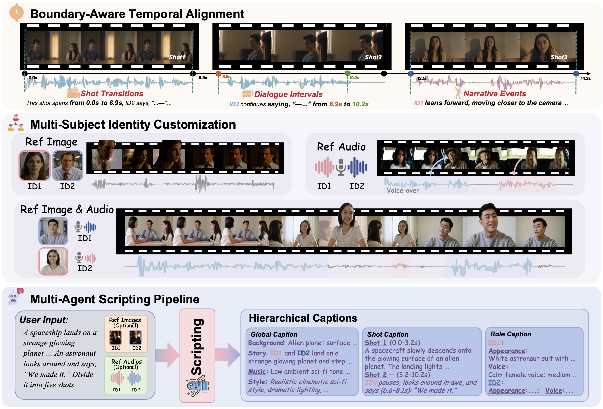
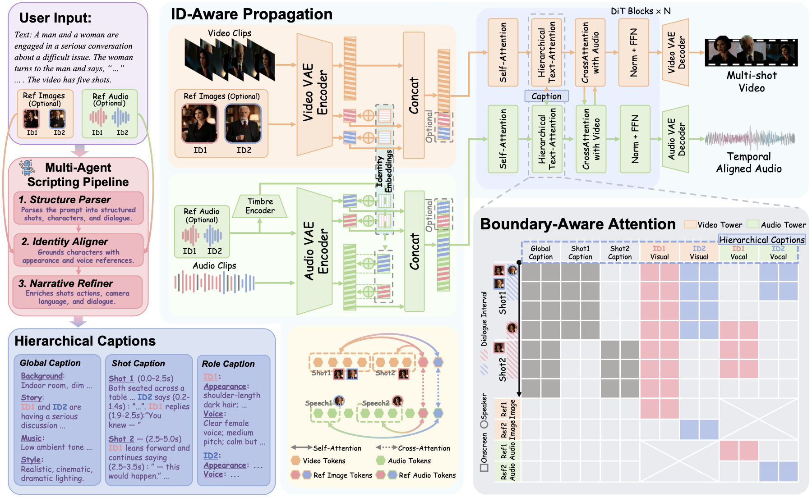

We propose the first framework for multi-shot audio-visual generation with customized narrative control, and introduce a multi-agent scripting pipeline to provide comprehensive audio-visual narratives as guidance.

Figure 1. Illustration of our MAVIN framework. First row: Leveraging boundary-aware attention, MAVIN enables precise temporal alignment for shot transitions, dialogue intervals, and narrative events. Second row: Through ID-aware propagation, MAVIN allows users to customize multiple subjects via reference images and audio, maintaining identity consistency across complex cinematic narratives. Third row: With the multi-agent scripting pipeline, MAVIN translates user inputs into hierarchical captions, providing decoupled narrative semantics for multi-shot audio-visual generation.
Abstract
While recent generative models produce high-fidelity videos, they struggle with the complex narrative control required for coherent multi-shot audio-visual generation. Existing methods suffer from temporal misalignment, limited controllability, and incomplete scripting. In this paper, we propose MAVIN, the first framework for multi-shot audio-visual generation with customized narrative control. To resolve temporal misalignment, we propose boundary-aware attention, which leverages hierarchical captions and boundary-aware token routing to render audio-visual elements within their respective temporal boundaries. To improve the controllability for multi-subject scenarios, we propose ID-aware propagation, utilizing identity embeddings and an identity-aware mask to bind specific identities to consistent visual appearances and vocal timbres. To provide comprehensive audio-visual narratives, we present a multi-agent scripting pipeline to transform free-form user inputs into hierarchical captions. Furthermore, we construct MAVINSet, a multi-shot audio-visual dataset for robust training and evaluation. Extensive experiments demonstrate that MAVIN achieves state-of-the-art performance, opening up a new avenue for integrating generative models into professional filmmaking workflows.
Contributions
We design boundary-aware attention to render audio-visual elements within their respective temporal boundaries, and present an ID-aware propagation mechanism to specify target characters with planned audio-visual attributes.
We construct a multi-shot audio-visual dataset with customized narrative annotations, and establish a manually verified benchmark to rigorously evaluate relevant methods.
Method Overview

Figure 2. Given free-form user inputs (purple block), we first employ a multi-agent scripting pipeline (red block) to transform them into hierarchical captions (blue block), detailing complex narrative timelines with precise shot boundaries and dialogue intervals. Within the ID-aware propagation, input video clips and optional image references are compressed by a Video VAE into latent tokens (orange block). The audio tower follows a similar process, but its optional audio references are additionally processed by a pretrained timbre encoder to extract clean timbre embeddings (green block). After concatenating with learnable identity embeddings, these tokens are fed into a dual-tower diffusion Transformer (cyan block). We adapt the self-attention and text-attention layers to be compatible with customized identities (yellow block). Furthermore, we integrate boundary-aware attention into these text-attention layers to enforce strict temporal alignment across complex multi-shot narratives (gray block). Finally, the VAE decoders produce the synchronized multi-shot video and audio results.
Representative Application Scenarios
Explore MAVIN's fine-grained control over multi-shot structure, dialogue timing, identity, speaking pace, and script planning.
Turn on sound for the full audio-visual experience.
01
Shot Transition Control
Explicit shot boundaries determine when the camera transitions between characters and viewpoints.
Example 1
View prompt
In a warm-toned kitchen, a blonde woman in a pale yellow blouse talks with a curly-haired woman in purple. In the opening shot (0.0–2.1s), the blonde woman smiles and says, “You always have been.” (speech 0.6–1.8s). The camera cuts to the woman in purple (2.1–6.3s), who looks down, then turns and replies, “I honestly don’t know where you get it from.” (speech 3.5–5.2s). Finally, the shot returns to the blonde woman (6.3–10.2s) as she smiles back and says, “Dad.” (speech 6.4–6.9s). They then chuckle together.
Example 2
View prompt
In an outdoor setting with green foliage, a young woman in a red-and-white striped shirt meets a young man in a dark striped polo. In the opening shot (0.0–1.9s), the woman smiles and says, “Hey.” (speech 0.0–0.4s). The camera cuts to the man (1.9–5.0s), who looks down and apologizes, “Look, um... I’m sorry about what I said the other night.” (speech 1.9–5.0s). Finally, the shot returns to the woman (5.0–10.7s) as she smiles and replies, “No, I’m the one who should be apologizing. I can’t believe the way I acted. I’m so embarrassed.” (speech 5.0–10.7s).
02
Dialogue Interval Control
Dialogue intervals place each utterance at an exact moment within the multi-shot timeline.
Example 1
View prompt
In a dimly lit library, two young women in school uniforms have a tense conversation. In the opening shot (0.0–2.3s), the blonde woman urges her companion, “Take the chip, get the machines right.” (speech 0.6–2.1s). The camera cuts to the brunette woman (2.3–5.8s), who looks determined and replies, “I will find out who sent this message on the server...” (speech 3.3–5.1s), before the blonde woman interrupts, “Callie...” (speech 5.1–5.5s). Finally, the shot returns to the blonde woman (5.8–8.3s) as she looks at her friend intensely and says, “Go.” (speech 7.0–7.3s). The scene ends as they maintain eye contact in silence.
Example 2
View prompt
In a rustic wooden setting, a young woman with voluminous curly brown hair and a plaid shirt chats with a young man in a blue-and-red flannel. In the opening shot (0.0–2.3s), the woman looks at him attentively and smiles as he asks, “Otherwise, who’d have been in charge?” (speech 0.8–2.1s). The camera cuts to the man (2.3–4.4s), who smiles slightly while looking at her, as the woman chuckles and says, “Steve.” (speech 2.9–3.9s). Finally, the shot returns to the woman (4.4–9.5s) as she looks down briefly before meeting his eyes again and adds, “He’s actually grown up quite a bit, you know?” (speech 6.2–9.3s), with a warm, playful smile.
03
Multi-subject Identity Customized Multi-shot Audio-Video Generation
Customize appearance, voice, or complete audio-visual identity with optional references.
1. Image-referenced Customization
Reference images
Prompt
A warm yet slightly ironic nighttime conversation unfolds outdoors between a woman in a mauve coat and a man in a dark overcoat with a gray scarf. In a close-up (0.0–2.1s), the man smiles slightly and tells her, “Look at that, you really did for me.” (speech 1.0–2.0s). The camera cuts to the woman (2.1–3.9s), who listens with a serious, skeptical expression against softly blurred lights. Returning to the man (3.9–8.0s), he continues more earnestly: “If I'd known that you were that good a performer, I would have let you be a good cop.” (speech 4.8–8.0s).
2. Audio-referenced Customization
Reference voices
Prompt
In a dimly lit setting with blurred background lights, two young men have a serious conversation. In the opening close-up (0.0–2.9s), a man with slicked back hair says, "No, no, he um, he wasn't ready yet." (speech 0.9–2.8s). The camera cuts to a profile shot (2.9–5.8s) of a man with a buzz cut and a fur-lined jacket, who remarks, "A rookie hero. So you trained him." (speech 3.5–5.8s). Finally, the shot returns to the first man (5.8–10.1s) as he answers, "As much as I could." (speech 8.8–10.0s).
3. Identity-referenced Customization
Image and voice references
Prompt
In a calm indoor setting, a blonde woman in glasses and a bearded man in a navy sweater talk. In the opening close-up (0.0–1.2s), the woman asks, "How do you typically do it?" (speech 0.0–1.0s). The camera cuts to the man (1.2–3.2s), who replies, "I put the fear of God into them until they talk." (speech 1.3–3.1s). The shot returns to the woman (3.2–4.9s) as she silently holds eye contact. Finally, the camera returns to the man (4.9–6.3s) as he adds, "But we can try your way." (speech 5.0–6.2s).
04
Speaking Pacing Control
The same narrative can be performed at different speaking speeds by editing shot and dialogue intervals.
Shared Prompt
In a dim, blue-lit room, a man interrogates a frightened long-haired man with a beard and nose ring. In the first close-up (…–…s), he asks, "And what about the cinnamon?" (speech …–…s). The other man (…–…s) replies, "I have no idea what you're talking about." (speech …–…s). Back on the interrogator (…–…s), he shouts, "You must know. Come on, come on, come on, come on. What about the cinnamon?" (speech …–…s). In the final shot (…–…s), the frightened man answers, "I don't know." (speech …–…s).
Mid Pace
Shots 0.0–1.8s · 1.8–3.9s · 3.9–7.1s · 7.1–8.8s Speeches 0.0–1.0s · 2.0–3.9s · 4.0–7.0s · 8.1–8.8s
Fast Pace
Shots 0.0–1.1s · 1.1–2.9s · 2.9–4.9s · 4.9–5.9s Speeches 0.0–1.0s · 1.1–2.9s · 2.9–4.9s · 4.9–5.9s
Slow Pace
Shots 0.0–2.9s · 2.9–5.9s · 5.9–10.0s · 10.0–11.9s Speeches 0.0–1.9s · 3.7–5.8s · 6.0–10.0s · 10.0–10.8s
05
Customized Identity Manipulation
Decouple visual appearance from vocal timbre to recombine identity attributes across subjects.
Different Person with Same Voice
View prompt
In a dimly lit medieval chamber, two men converse across a candlelit table. A man with long platinum blonde hair and a gold chain looks down and says, "I agree." The scene cuts to a dark haired, bearded man in a green tunic who shares the exact same voice as the first, and replies, "I just hope you don't have to maim half of my city to achieve this."
Same Person with Different Voice
View prompt
Against a neutral studio background, a young blond-haired man demonstrates his vocal range. In a static medium close-up, he faces the camera and says in his natural voice, "Through MAVIN I can change my voice speaking voice to different tones." He then switches to a smooth, feminine voice, continuing, "Right now I can switch to another voice." The shot then cuts to a side-angle view, where he speaks again in a female voice, saying, "Isn't that amazing?"
06
Intelligent Script Planning
A multi-agent pipeline turns a free-form idea into structured global, role, and shot-level instructions.
Input
Free-form user prompt
Multi-agent scripting
Output
Rich, controllable cinematic narrative
Free-form Prompt Generation
View prompt
A man seriously tells another, "No matter how righteous, it was doomed from the start. We've done all we could, but now it's over. I'll not have my kin die for nothing," while the other listens silently.
MAVIN with Intelligent Script Planning
View hierarchical prompt
Global Prompt: A tense cinematic exchange unfolds outdoors in a cold, windy setting as two men confront the collapse of a once-righteous cause, creating a heavy, reflective atmosphere.
Role Prompt: Two men face each other in conversation. Appearance: one man listens with a serious expression and wind-blown hair, while the other appears stern and weary. Voice: the speaker talks in a solemn, reflective tone that gradually becomes firm and determined.
Shot Prompt: Shot 1 (0.0–1.6s): Over-the-shoulder close-up of the listener watching the other man as he begins off-screen, "No matter how righteous..." (speech 0.0–1.5s). Shot 2 (1.6–3.1s): Cut to a close-up of the speaker looking at him with regret, finishing "…it was doomed from the start." (speech 1.6–3.0s). Shot 3 (3.1–4.4s): Cut back to the silent listener processing the words as wind moves his hair. Shot 4 (4.4–10.8s): Cut to the speaker again as he resolves firmly, "We've done all we could." (speech 4.4–5.8s) "But now it's over." (speech 6.2–7.4s) "I'll not have my kin die for nothing." (speech 7.8–9.6s).
BibTeX
@article{liu2026mavin,
title={{MAVIN}: Multi-Shot Audio-Visual Generation with Customized Narrative Control},
author={Liu, Kaiqi and Mao, Yunyao and Cai, Ziqi and Geng, Zheng and Wang, Jing and Wang, Qiulin and Wang, Xintao and Wan, Pengfei and Gai, Kun and Weng, Shuchen and Shi, Boxin},
journal={arXiv preprint arXiv:2606.29473},
year={2026},
note={Accepted to ECCV 2026}
}